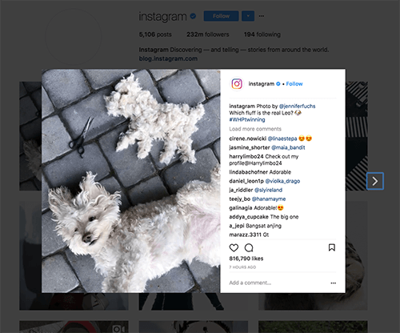
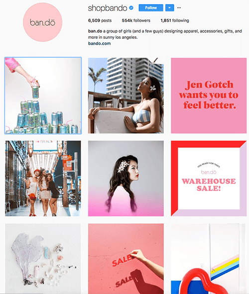

With its massive growth lately and with the engagement rates of this platform, Instagram is one of the most effective visual advertising channels right now. If used the right way, Instagram can help you build a massive following in any niche you like. One of the requirements that we find extremely important, but often overlooked by many marketers, is hashtagging your photos and get them in front of a large and engaged audience.
Let’s see 15 of the most effective hashtags to use on Instagram right now:
1. Instagram’s Weekend Hashtag Project
Keep an eye on the Instagram’s official account and be part of the weekly challenges that are announced each Friday. Study each week’s winner to see what it takes to get featured on the Instagram’s own account that is followed by over 102 million people. On each Monday morning, 9 of the photos submitted to the challenge will be shared on the account’s timeline. On top of that, each week the Instagram team will share other inspiring pictures from the community.

2. #exploretocreate
Similar with JustGoShoot, The Visuals Collective is a collection of unique visual stories from around the world. Their hashtag is #exploretocreate, and you can use it if you want to get featured. These hashtags usually work together as they focus on the same topics.
3. #peoplescreatives
The People’s Creative started this hashtag. Their motto is simple: “You create. We curate.” Thier account features landscape, portraits, conceptual artwork from around the world. So if your content is relevant for their feed, you can start using #peoplescreatives hashtag with your best pictures.
4. #passionpassport
Share your travel memories around the world on Instagram and don’t forget to tag them with #passionpassport. The team behind the hashtag, Passion Passport is always searching and posting inspiring travel stories shared by the community. Not only that but they have periodic challenges also, with specific hashtags, so you’ll have even more chances to get featured.
5. #monoart_
This is a hashtag for your black and white photos. While Instagram is a color dominated platform, a lot of people try to resist the traditional rules and expose the beauty of things in more simple and monochromatic ways. The Monoart team started promoting the hashtag #monoart_ to build a community around the black and white photography. Use it with your best black and white photos to be featured and get more exposure.
6. #my_365
If you’re a fan of photography challenges, you might want to check out My 365‘s Instagram account. There is an entire community of creatives behind this account that decided to take the challenge of posting one photo each day. To join the community you just need to start the challenge and use the hashtag #my_365. Good luck!
7. #theoutbound
The Outbound‘s Instagram account inspire people to discover, explore, and share their favorite outdoor activities. If you’re an adventurous type and want to be part of an active community, tag your exciting photos from across the globe with the #theoutbound hashtag.
8. #worldtravelbook
Even if you’re not a travel blogger I’m sure you have amazing pictures from your holidays. Why not tag them with #worldtravel book and have them featured by World Travel Book account?
9. #flashesofdelight
Glitter Guide is a lifestyle website that’s trying to inspire you and get your creativity going with crisp and elegant pictures. Each week they’re looking through pictures shared by the community and pick several ones to be featured in their account. So, study their style closely and if your pictures would be a good fit, submit your photos by using the hashtag #flashesofdelight.
10. #bandofun
Ban.do‘s Instagram account is full of fun and colorful pictures that perfectly represents their brand. The Instagram feed depicts pictures of their products that consist of fun gifts and accessories. But their strategy is to create a community around their brand, and they’re certainly succeeding. These girls love to share content created by the community. And if you want to be a part of the community, just use the hashtag #bandofun.

Keep an eye on their feed too, for the weekly challenges. Each Friday they post a #bandotodolist with fun activities to try during the weekend. So why not having some fun in the process? See the challenge, take the pictures, tag them and you can get featured.
Many of these hashtags work better together if you want the best results. But remember, you need to add the most relevant hashtags as soon as possible to get the best exposure. If you add hashtags to older photos you’ll miss your chance because Instagram display’s the hashtagged photos in chronological order, the most recent ones are on top. With the dynamic of this platform and hundreds of photos that are shared each day you only have a few minutes window of opportunity to get your photos in front of a large audience.
Of course, only using the right hashtags is not enough to have a successful Instagram activity. It takes a lot of work and creativity too. Consistency is one of the key elements that you need to have in mind when sharing your content. Only share your best photos, be active and engage with other members of the community and you’ll have a growing Instagram account in no time.
How about you? What other Instagram hashtags you know to be extremely effective these days? Share your thoughts in the comments!
Joie Gahum says
Great article. One tip is to look for good hashtags in hashatory as well.
Isabelle says
Hey Jarvee, thanks for sharing! I like the examples of hashtags you have used. However, I haven’t used none of them yet, even I do photography. So this will be useful for my future posts, many thanks!
Gracie says
Hey Jarvee, thanks for sharing! I like the examples of hashtags you have used. However, I haven’t used none of them yet, even I do photography. So this will be useful for my future posts, many thanks!
Gaia Park says
Hashtags that are part of some kind of viral challenges are very popular these days and people love to participate in these online instagram challenges. People really put on some effort to create interesting videos or photos, so you should take advantage of these as well.
Reema says
There are different kinds of hashtags you can use to make sure that your post will pop up if it really has some great value. But this depends also on your profile’s niche. I see that #pillowchallenge is quite popular these days. But you’ll need some creativity to take advantage of this and not look silly.
Gabrie lHeinze says
Hashtags choice is the critical one, it depends on the niche, popular things lately, our desires, etc. By the way, thanks for sharing
Charlie Lamiele says
Non-professionals are disregarding the importance of the hashtags, that’s why they are not professionals
Linda Gouthard says
It’s very hard nowadays to find the best hashtag, there are so many of them, maybe to try with the specific niche ones and to see if that will help